Fixing the Academy P-38 Tail Boom
Or
“Does that look straight to you???”
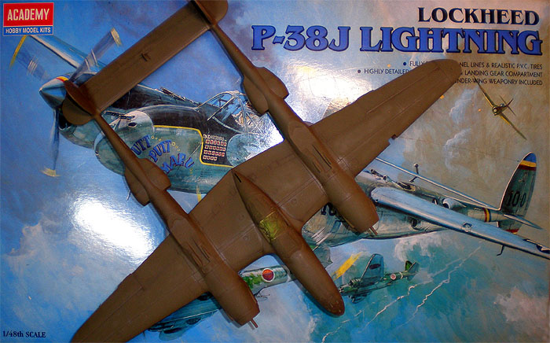
Images and text Copyright © 2008 by Paul Budzik
Forward by: Matt Swan
Forward
About five years ago I started working on an Academy P-38. Things were going along just great, the cockpit looked great, parts seemed to be fitting well and I had some great aftermarket decals I was going to use. Once the base kit was together and I started painting I noticed the rudders were twisted off center. I’m like ‘what the heck?’
It seems that I had not been paying close enough attention when I glued the booms together. I thought I had but I guess it was not good enough. I chalked this one up to experience and placed the unfinished model in the parts graveyard. At least I still had the cool aftermarket decals and could try this kit again sometime in the future. What I did not know at the time was I was not alone with this problem. Seems quite a few modelers are challenged by P-38 tail boom alignment, especially with the Academy kit. Now there is hope for all of us unsatisfied P-38 builders and that hope comes in the form of Paul Budzik and his ingenious P-38 construction jig.
Fixing the P-38 Tail Booms
I have been in the process of building a replacement P-38 for my ceiling air force’s aging Monogram version that I built years before there was anything else in 1/48. I’m using the Academy kit and I’ve become aware of the difficulty in getting the assembly straight and square. Nothing spoils a nice P-38 model worse than something being cockeyed and it’s very easy to do. I came up with a method that worked pretty well so I thought it might be of interest to some others. I’m building for wheels up so of course if you’re doing gear down then there will be a few differences. First off, I rubber-banded the aft section of the booms to maintain a reasonable alignment, and just cemented the top and bottom of the forward section of each engine paying strict attention to their alignment.
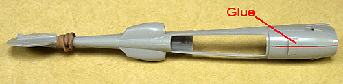
This photo shows the warpage/discrepancy in the area of the vertical stabilizer. The difficulty arises trying to insure that it matches the vertical alignment of the engine nacelle.
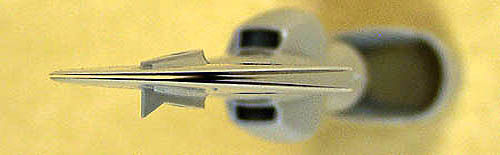
I made a small notch in the front of the nacelle at the joint to accept a piece of .010 sheet brass.
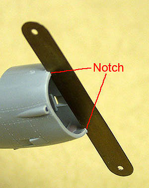
The boom was then jigged up like this. The jig consists of nothing more that two blocks of wood at either end that are rubber-banded around a plywood base. The rest of the boom was cemented.
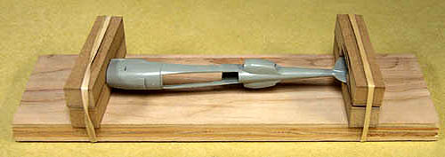
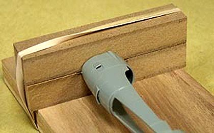
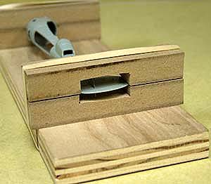
After the cement had set, I fitted the doors and cemented them in place while the boom was still in the jig.
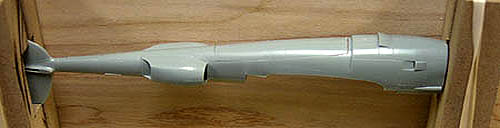
I also added a piece of sheet styrene for added rigidity. This was also done while the boom was in the jig.
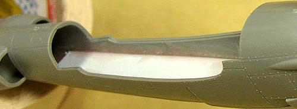
The first step in mating the booms to the wings was to make sure everything was square when viewed from above. The nacelles rest against a straight stop forward and the booms are aligned with the wings. The horizontal stabilizer rest on a block so that it remains horizontal. A square is used to insure that the vertical stabilizers are vertical. The horizontal stabilizer is glued up first.
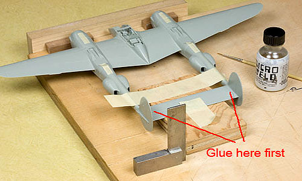
When the glue is thoroughly set, any final touch-up adjustments are made to improve the fit and alignment of the wing to boom joint. Finally this joint is taped and then glued.
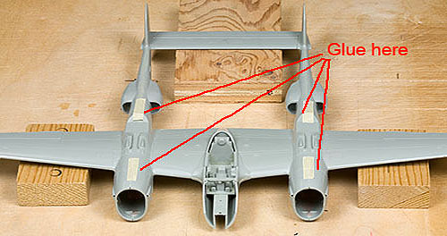
I found the process a bit counterintuitive, cementing the horizontal stabilizer first, but it worked like a charm. I hope it helps some modelers.